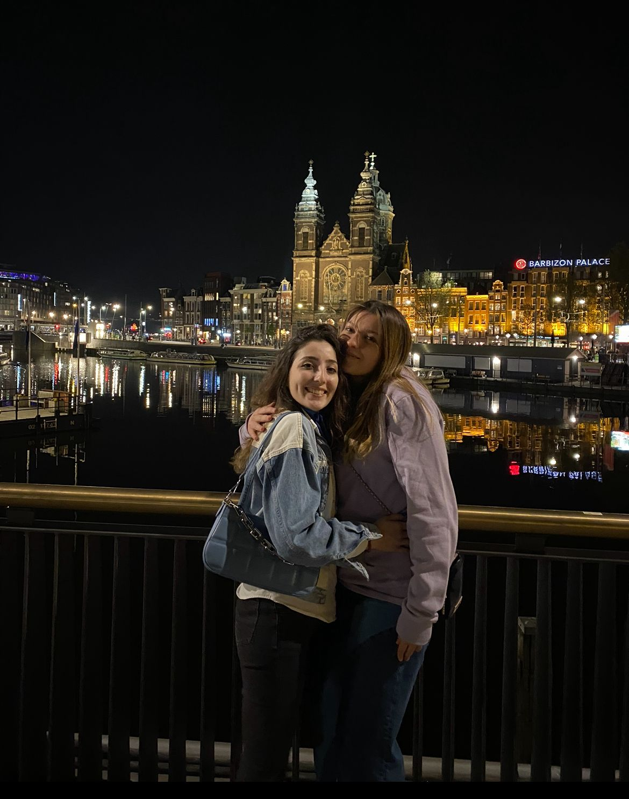
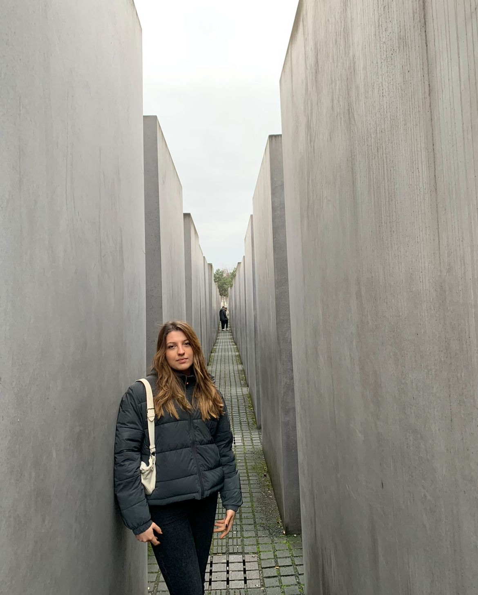
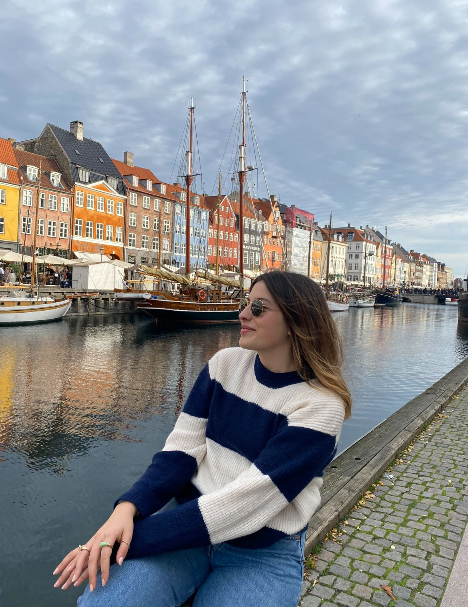
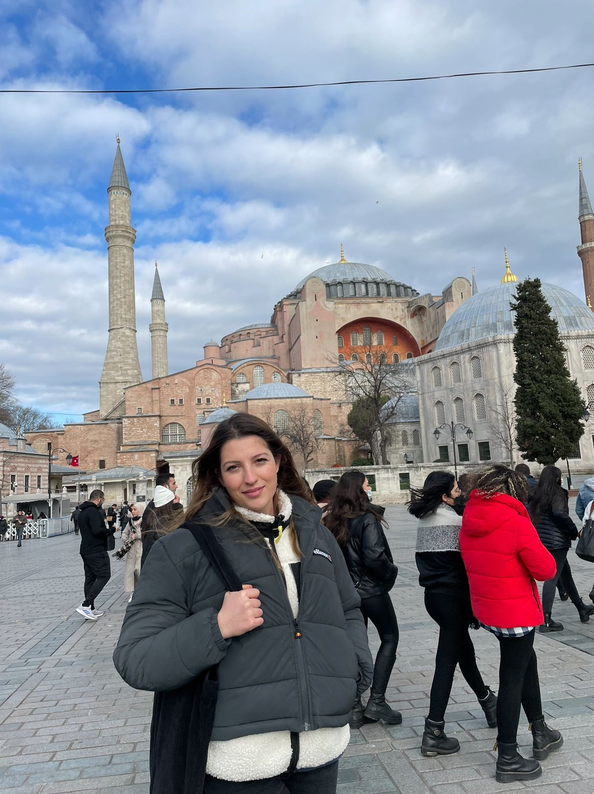
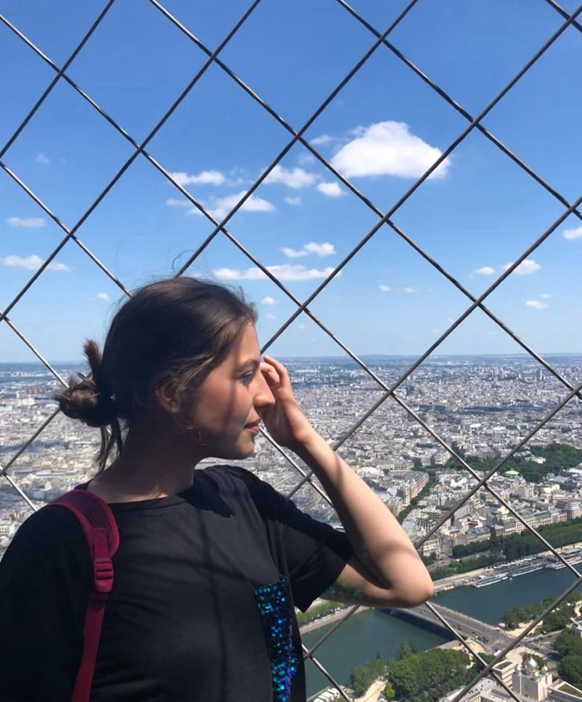

Mijn Vakantie Verhaal
Nederland(Amsterdam)
Al een tijdje woon ik in Uithoorn, vlakbij Amsterdam. Mijn school ligt ook heel dicht bij het centrum, dus ik heb vaak de kans om naar Amsterdam te gaan. Ik ben erg blij in Amsterdam te zijn; de culturele huizen hier lijken erg origineel voor mij. Onlangs heb ik een boottocht gemaakt om mijn familie rond te leiden, en een van de lokale jongens vertelde me dat veel van de gebouwen in Amsterdam niet kunnen worden veranderd. Ik denk dat ze op deze manier een prachtige uitstraling hebben. Hoewel Amsterdam een drukke stad is, vind ik het een geweldige stad vanwege de talloze dingen die je hier kunt doen.
Duitsland(Berlijn)
Berlijn is de hoofdstad van Duitsland en tevens de populairste bestemming voor een stedentrip in Duitsland. De meer dan drie miljoen inwoners tellende metropool kent een roemruchte geschiedenis. Hoewel de stad een eeuwenlange historie kent is het juist de recente geschiedenis die zo haar stempel drukt op deze stad. Berlijn sinds de oorlog draagt veel herinneringen met zich mee. Binnen de stad is de Berlijnse Muur nog steeds niet afgebroken, en ik denk, gebaseerd op mijn eigen ervaringen, dat het een beetje een dure stad is. Ik zou zeker in Berlijn kunnen wonen. Het doet me denken aan mijn eigen land, Istanbul, waar ik 16 jaar heb gewoond maar ik kan geen opmerkingen maken over onderwijs en de mensen.
Denemarken(Kopenhagen)
Denemarken heeft misschien wel de mooiste stranden in Noord-Europa met wit zand, hoge duinen, uitstekende kwaliteit water en uitgestrekte natuur. Denemarken is dé bestemming voor een vakantie met kinderen! Het maakt niet of je op zoek bent naar een outdoor activiteit, interactieve musea of fun, in Denemarken vind je allerlei attracties voor families met kinderen. Ik ben twee dagen naar Denemarken gegaan met mijn neef. Het is een van de mooiste plaatsen die ik heb gezien maar tegelijkertijd ook erg duur.
Turkije(Istanboel)
Turkije is er voor ieder type reiziger wel wat wils! Turkije is een veelzijdige vakantiebestemming en biedt voor ieder type reiziger wat wils. Of je nu aan het strand wil genieten van een heerlijke zonvakantie, samen met je partner in een romantisch adults only hotel wil verblijven of op zoek bent naar een kindvriendelijke vakantie met het hele gezin. Turkije is mijn favoriete land. Ik heb altijd van drukke steden gehouden. Istanbul zoals de meeste mensen weten is een extreem drukke stad. Wat ik het leukst vind om in Turkije te doen is dat er zoveel te doen is
Belgie(Anvers)
België is een hele leuke en veelzijdige vakantiebestemming die voor velen vlakbij huis ligt. Van de stranden aan de westkust tot de Ardennen in het oosten en de vele plaatsen daar tussenin. Er is altijd wel een plek te vinden om je vakantie door te brengen. Toch zullen de meesten Belgie vooral kennen van een dagje winkelen in Antwerpen, de luchthaven bij Brussel of als doorrit richting het zuiden.

Frankrijk(Parijs)
Parijs, de hoofdstad van Frankrijk straalt op elke vierkante meter klassieke schoonheid uit. Bezoek artistieke wijken als Montmartre, unieke stadsparken als Promenade Plantée en iconische monumenten als Arc de Triomphe. Dit zijn de mooiste bezienswaardigheden van Parijs. Parijs is een prachtbestemming. De Franse hoofdstad is opgebouwd uit twintig stadsdelen, beter bekend als arrondissementen, waar rivier de Seine sierlijk doorheen slingert. Het romantische centrum is gevuld met verrukkelijke bistro’s en sfeervolle verlichting. Kortom: de perfecte plek om het leven te vieren. Toen ik naar Frankrijk ging was ik nog erg jong. Het is al lang geleden maar het is een zeer romantische stad hoewel het in de zomer erg heet kan worden. Ik denk dat het perfect is voor een vakantie vooral als je met je partner bent.
